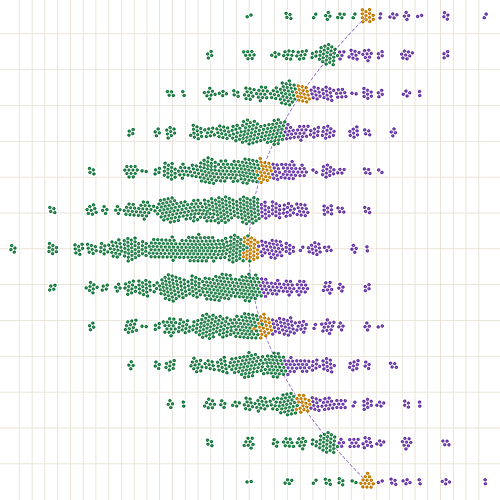
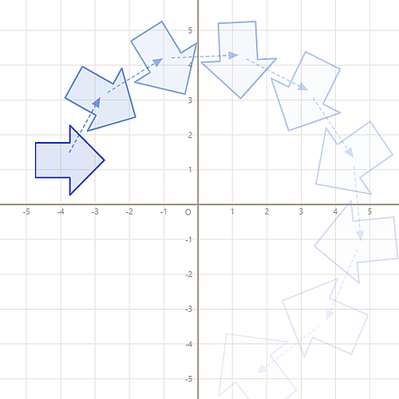
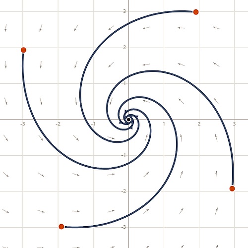

Explore the relationships between over 2000 integer matrices. Sort them by properties including trace, determinant, condition number, and many more, to uncover hidden geometric patterns.

Visualise how a 2×2 matrix transforms 2D space. Drag points, lines, and shapes to discover how they are transformed, either once or multiple times. Find invariant lines, and explore how transformations change length and area.

2x2 matrices can be used to define a dynamical system (equivalent to a pair of linear Coupled Differential Equations). Explore the different types of behaviour by seeing trails or animated movements.